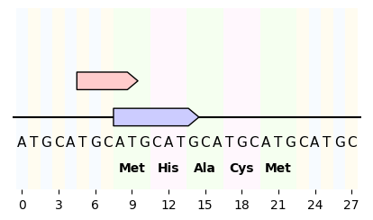

Plot sequence nucleotides and translation¶
from dna_features_viewer import GraphicFeature, GraphicRecord
record = GraphicRecord(sequence="ATGCATGCATGCATGCATGCATGCATGC", features=[
GraphicFeature(start=5, end=10, strand=+1, color='#ffcccc'),
GraphicFeature(start=8, end=15, strand=+1, color='#ccccff')
])
ax, _ = record.plot(figure_width=5)
record.plot_sequence(ax)
record.plot_translation(ax, (8, 23), fontdict={'weight': 'bold'})
ax.figure.savefig('sequence_and_translation.png', bbox_inches='tight')
